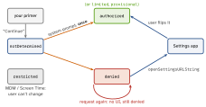

security · folio
In one line: The device is the attacker’s: everything in the
.ipa is readable and every client check is hookable — so secrets and
real decisions live on the server, and the client only
proves things (TLS, App Attest). Privacy is the mirror image: you get
one system prompt per permission, and must declare what you
touch (purpose strings, privacy manifest, nutrition label).
Download PDF Print view LaTeX source

Hardening
- ATS:
URLSessionrequires HTTPS, TLS 1.2+, forward secrecy, SHA-256 certs. Exceptions inInfo.plistNSAppTransportSecurity: per-domainNSExceptionDomains(prefer),NSAllowsLocalNetworking; blanketNSAllowsArbitraryLoadsneeds an App Review justification. - Pinning: ATS trusts every CA on the device (user/MDM CAs too); pin the SPKI hash + a backup pin (
NSPinnedDomainsor the trust challenge) — see certificate-pinning-2026. - No secrets in the binary:
strings, class-dump, Hopper read plists and literals; an XOR’d key is plaintext in memory at use (Frida). Client keys: low-privilege, scoped, rotatable; real secrets stay behind your backend. - Jailbreak detection (Cydia paths,
fork(), injected dylibs) runs on the attacker’s device ⇒ hookable. A risk signal, never a boundary. Same for obfuscation andPT_DENY_ATTACH: they buy time, not safety. - App Attest (
DCAppAttestService): SE key →attestKey(Apple-signed: genuine app, real device) →generateAssertionper sensitive request; the server verifies. DeviceCheck (DCDevice): 2 bits per device per developer, survive reinstall — “free trial used?”, not integrity. - Storage recap: secrets → Keychain; files → Data Protection; never
UserDefaults; pasteboard.localOnly+.expirationDate; blur the app-switcher snapshot. - Logging:
Logger/os_logredact dynamic strings as<private>by default (scalars are public)(unverified); opt in per value withprivacy: .public. Neverprint()a token.
Privacy
- Purpose string per protected API (
NSCameraUsageDescription,NSLocationWhenInUseUsageDescription, …): missing ⇒ crash on first access. Specific and honest. - Read status first (
authorizationStatus); ask in context, after your own primer, since the system prompt is one-shot. - ATT:
ATTrackingManager.requestTrackingAuthorization(+NSUserTrackingUsageDescription, app active). Not authorized ⇒ IDFA is all zeros. “Tracking” = linking your data with other companies’ for ads/brokers. Fingerprinting is banned either way. - Privacy manifest
PrivacyInfo.xcprivacy(app and each SDK):NSPrivacyTracking,NSPrivacyTrackingDomains(blocked without ATT consent),NSPrivacyCollectedDataTypes,NSPrivacyAccessedAPITypes+ reason codes. Required-reason APIs:UserDefaults(CA92.1(unverified)), file timestamps, boot time, disk space, active keyboards. Listed SDKs must ship a manifest + signature. - Nutrition label (App Store Connect): data collected, linked to identity, used to track — including your SDKs’.
One prompt, then Settings

Example — log safely, branch on status
let log = Logger(subsystem: "com.x.app", category: "auth")
log.info("login \(email)") // shows <private>
log.info("screen \(name, privacy: .public)") // explicit opt-in
log.info("user \(uid, privacy: .private(mask: .hash))")
switch AVCaptureDevice.authorizationStatus(for: .video) {
case .notDetermined: // primer first,
showPrimer { requestCameraAccess() } // then the ONE prompt
case .denied: openSettings() // can't re-ask
case .restricted: explainUnavailable() // user can't change
case .authorized: startCamera()
@unknown default: break
}Traps
- “Re-ask after Don’t Allow” — impossible; the request returns
deniedsilently. Explain + deep link to Settings. - Camera permission ≠ ATT: using data in-app is not “tracking”.
- Jailbreak check or
evaluatePolicyas the gate — both are Booleans on a hostile device. - “Our API key is obfuscated” — still public; scope and rotate it.
NSAllowsArbitraryLoadsto fix one HTTP host — use a per-domain exception.UserDefaultsneeds a required-reason entry — even in a plain app.
Remember
“Readable, hookable, declared.” Everything shipped is readable; every check is hookable; every access is declared. Trust → server + attestation. Permissions: primer → one prompt → Settings.